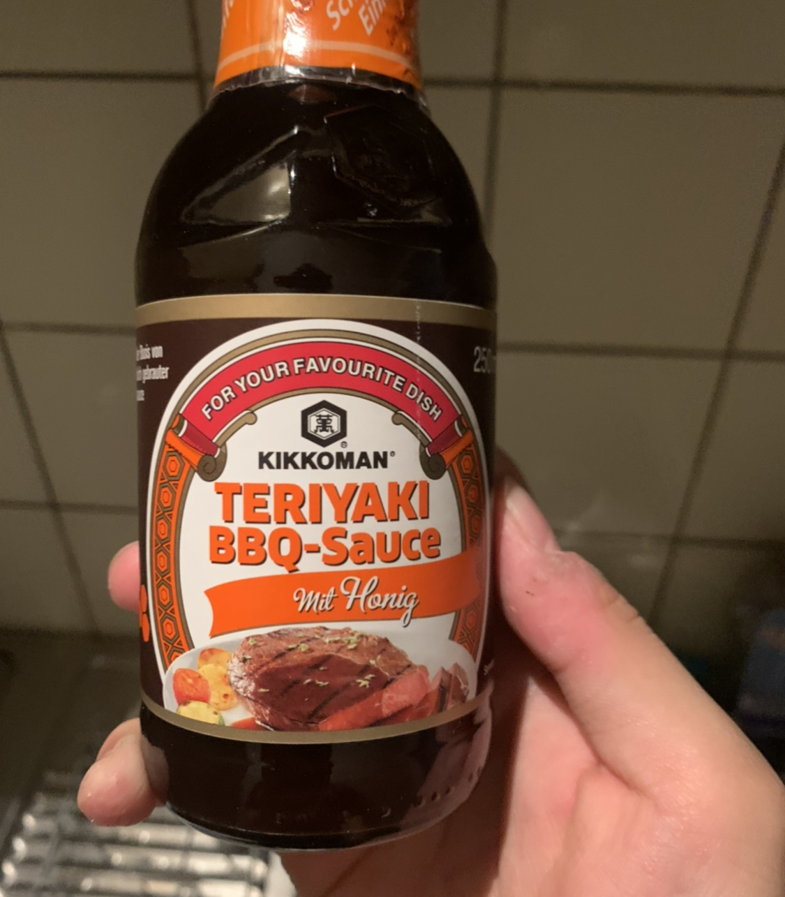
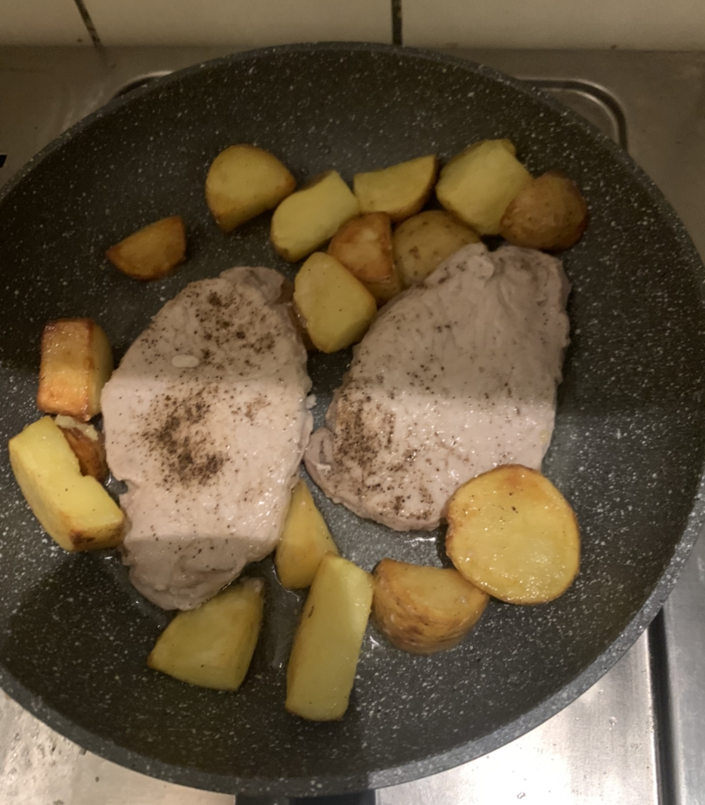
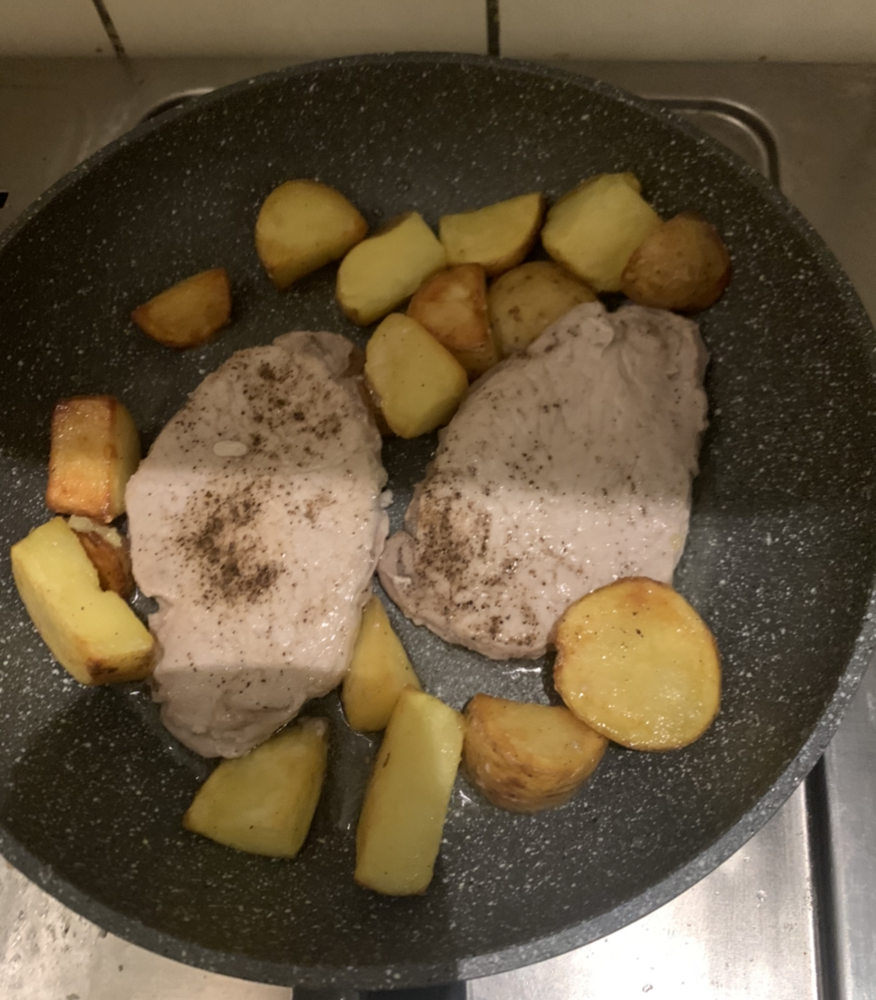
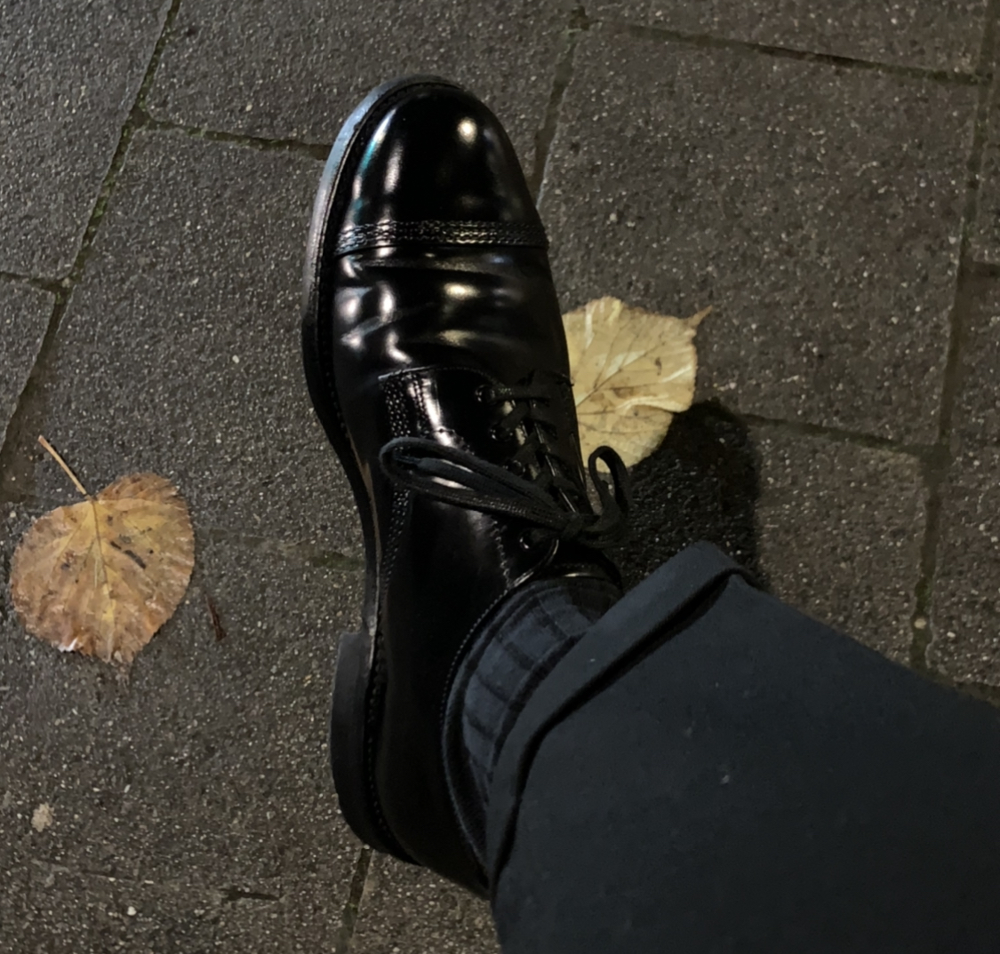
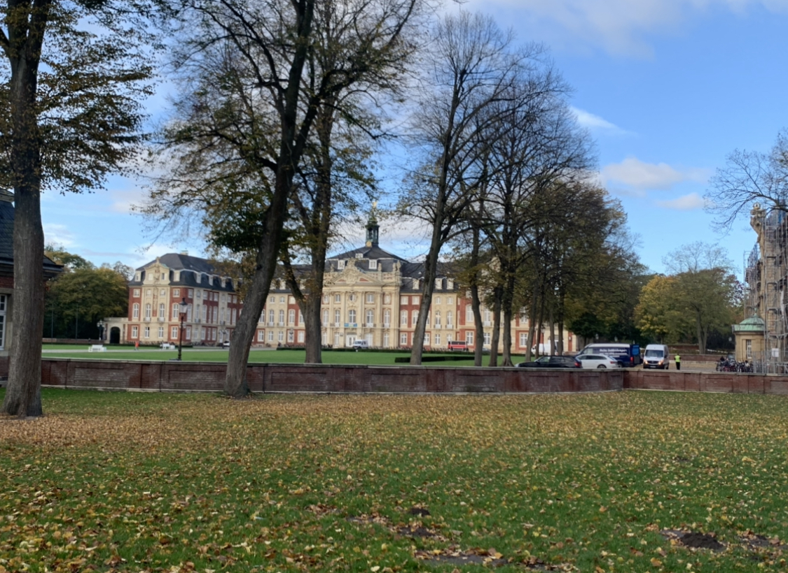
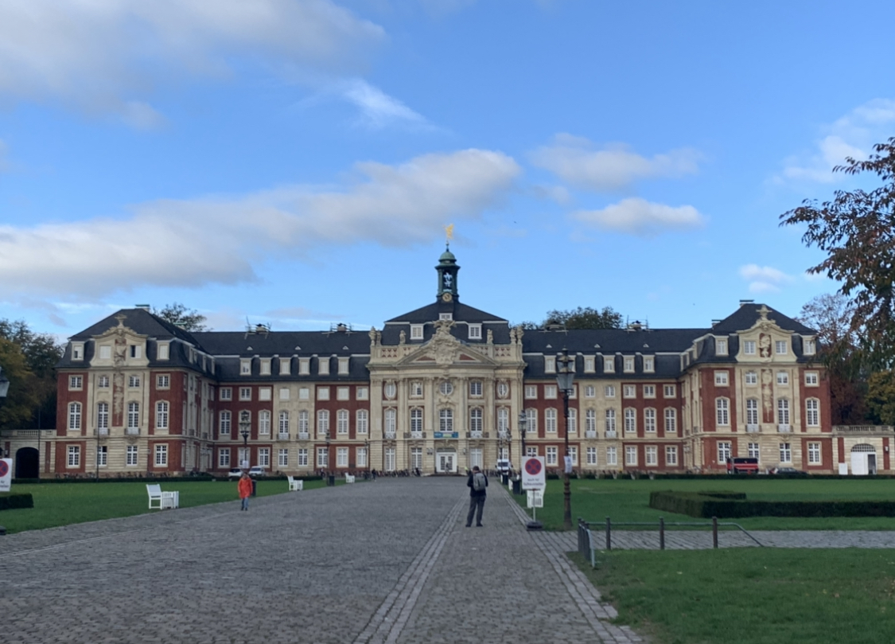
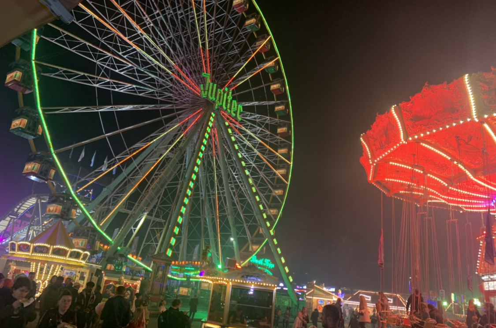
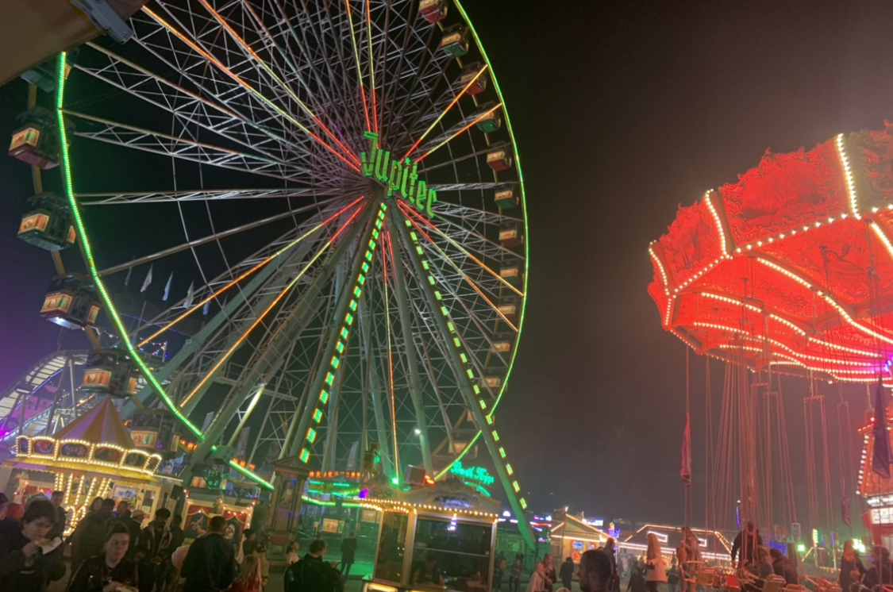
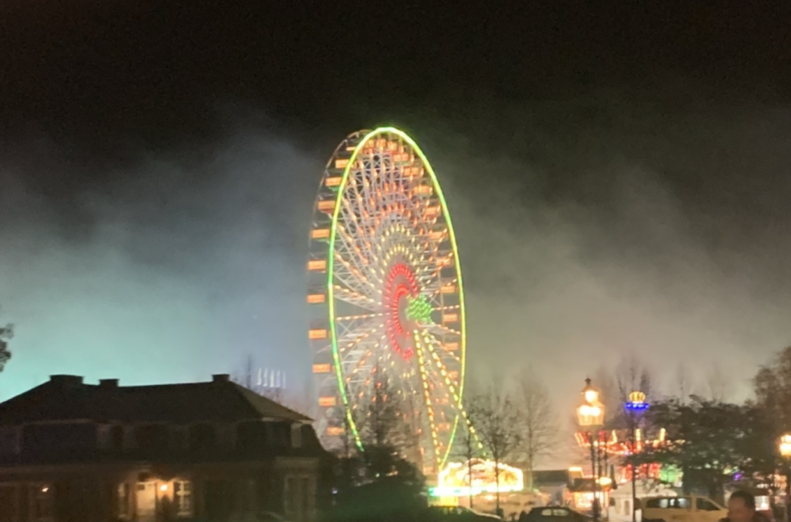
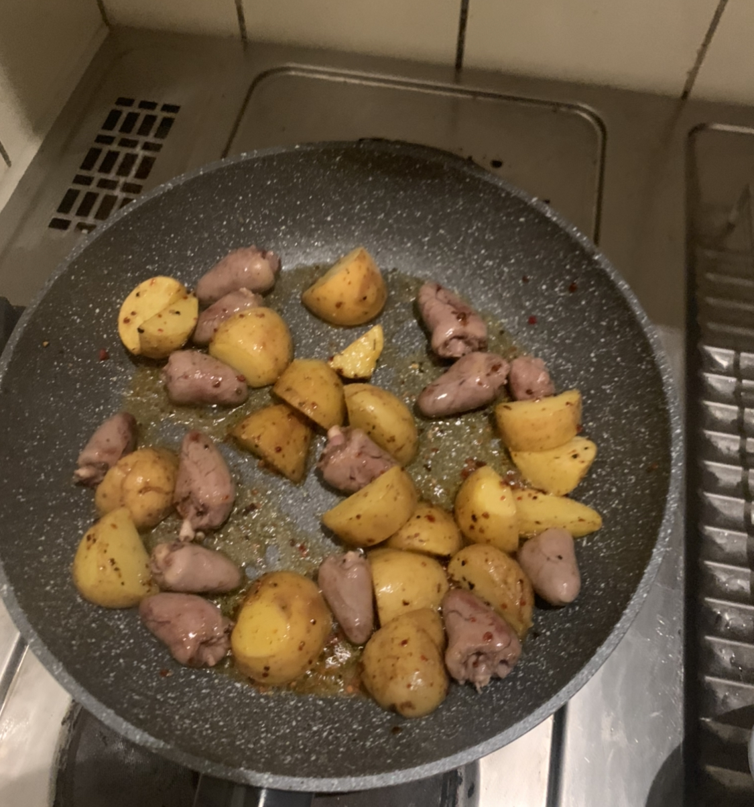

ドイツ滞在の記録(2022年11月)
現在ドイツの大学院にいます. 内部モデル理論を研究しています.
総集編
サボっていた分の写真だけあげときます.

 

作ったソテーの写真. ソースはスーパーで売ってたキッコーマンのソース. かなりうまい. ビールもレモンの風味でかなり飲みやすい.


靴.


大学の本校舎. 初めて見た. でかい.
移動式遊園地に行きました. 夜は雰囲気がパーティーのようで楽しかった. 結局ビール飲みながらずっと数学の話していた.


 





学食. かなりおいしかっった.


ドイツ語のクラスの後, ビール飲みながら数学の話をずっとしていた. 駅の裏にベンチがあったからそこで飲んでいた. M1のsuitable partのsharpとM1^{sharp}の関係性について話していた.

ワインが安かったので買った. 5ユーロだった. 美味しかった. 2日で飲み切ってしまった. サラミとチーズと一緒に楽しんだ.

肉を焼いた. でかい肉.

靴を磨いた.


ハツが安かったのでハツを焼いた.
01.11.2022
10月後半なんとなく忙しくて書いていませんでした. ちゃんと書きます.

せっかく大学に行ったのに休日で閉まっていた. 残念. 家で数学をした. あと君の名は。を見た.
サイドゴアブーツいいなぁと眺めていた. Uチップかブーツかで迷っている. 12月になるまでに決める.
銀行口座のタイプを課金してワンランクあげた. 月3ユーロで1年間試してみることにした. 送金の手数料がかからなくなり, カードもアップグレードされた.
一番の旨味は1つのアカウントでスペースを複数持つことができ(つまり口座を分割でき)ることだ. とりあえず常に使う口座とは別に貯金用の口座を作ってみた. かなり便利だと個人的には思う.
毎月400ユーロ貯金しているのでそこに置いておこうと思う. (貯金に関してはドイツに来てからちゃんとしている. 帰省や何かあったときのためである. )
貯金用に口座を別に作ってもいいが市中の銀行で開設するの面倒だし, transferが面倒なのでこれでいいかとなっている.
02.11.2022
今日は研究室のセミナーがあった。
精神状態があまりよくない。なぜだろうか。漠然とした不安がある。
とはいいつつも精神状態がずっと良かった時期なんてなかったわけなのでこんなものだろう。
英語での日常会話が下手くそすぎるので上達したい。数学の話はわかるが、普通の会話になるとなかなか難しいものである。
難しい。
図書館でジャルジャル見ていたら友人にセミナー聞いてると思われていた。図書館でジャルジャルを見るな。
04.11.2022
ロジックグループに新しい秘書が来て歓迎パーティーがあった.
そのあとポーランドから来た内部モデル理論の研究者のセミナー発表を聞いた. 1ヶ月ミュンスターにいるらしい. そのあとは研究室の人たちと食事に行った.
イタリアレストランに行った. かなり良いところだった. ビールをたくさん飲んだ.
ぼんやりとした不安.
05.11.2022
家で数学をする.
PDEの講義で出された演習問題を解いた. 調和関数に関する問題だった. 難しくなかったのですぐ終わった.
07.11.2022
引越し先の住所登録に行った. 書類を揃えるのが遅くなったため11月になってしまった.
時間があったのでデパートで服を見た良さげなニットやトラウザーがあった. ちょうどニット欲しかったので月末買いに行く.
良さげなジャケットもあったが日本を出る直前にジャケットを買ったこともあり保留.
あとはチェルシーブーツも見た. ブーツやはりいいわね.
幾何学的群論の演習を解いた. 気分転換になる. 正答率(点数)がトータルで50パーセント以上取る必要があるとのことなのでしっかり取り組んでいるが今のところ48点満点で47点なのでこのままいけば大丈夫だと思う.
今週の問題は無だった. やるだけ. 終了.
08.11.2022
指導教官から本のtex打ちの仕事を紹介された. 喜んで引き受ける. 内部モデル理論の本なので勉強にもなるし, Jensen mouseについて学ぶいい機会になると思う.
そのうちベルリンに出張に行きます.
ビザ申請の手続きを進めた.
09.11.2022
ビザ申請を完了させた. 不備がなければこのまま滞在許可を受け取るだけのはず.
ステンカラーのボタンを全て閉じるのがマイブームです.
日本の男性ファッション雑誌を毎月(or毎週)気分転換で読んでいるが今年のバブアーはボーダーが推されているように感じる.
去年の段階でボーダーが一番かっこいいと思って購入した自分は先見の明がある? 単純にステンカラーコートが好きなだけである. ステンカラーコートが一番かっこいいと思っている人です.
11.11.2022
デュッセルドルフに髪を切りに行った. 予約の時間より早めに行って服を見ていた. 靴下が不足していたのでユニクロに行ったが最小サイズがUK9と大きすぎて断念...
(私の場合革靴のブランドにもよるがUk6.5, US7.5 or 8である. ) 結局デパートの紳士服コーナーでちょっといい靴下を買った.
普段あまり靴下にお金をかけてなかったがこれを機に良い靴下を求めるのはいいかもしれない.
そのあとはあちこちぶらぶらみた. Shoepassion デュッセルドルフ店も見た.
ミュンスターの店よりかは品揃えが充実していた. そのあと前もって調べていたShoe Primeという革靴店に行った.
ドイツにある革靴ブランドで自社で工場を持っておりグットイヤーウェルトの革靴を作っている. ホームページで見た感じかなり良さげである. デザインはドイツの革靴だなぁという感想である.
ちゃんとドイツ特有の爪先を持った靴はここでもあった. ただラウンドチップ(Uチップ)の靴が無いのですぐにここで買うことはなさそうである.
個人的にドイツの革靴のデザインは自分の好みとは少しずれているなぁと思っている.
聞いたことのない革靴ブランドなのでせっかくだし見に行ってみた. 価格帯は330ユーロ(5万円弱)ほどで, 革質も良さそうである. 店員と少し話して帰る.
そのあとまた紳士服を色々見たりしていた. バブアーもあったので立ち寄った. 寒くなってから毎日アウターはバブアーなので頭が上がらない.
次はビデイルあたりが良さそうだなと思っている. ビデイルを試着したりした. 店員から今日来ているアウターを誉められた. 嬉しい. あとは同じく買い物に来ていたおっちゃんと話した.
良さげなトラウザーも探しているが微妙なのしかなかった. ミュンスターにある紳士服屋を既に見つけているので今度そっちに行く.
髪を切って帰る.
指導教官が体調不良で来れなくなったので午後の研究室のセミナーはキャンセルになった. 研究室のメンバーとG先生でご飯を食べに行った. 内部モデル理論の話に花を咲かせた.
ふとドイツからならノーザンプトン行くの簡単なんじゃね?と考える. 明日調べる.
12.11.2022
来週末にベルリンに出張に行くことになった. J先生に会いに行く. お金は全部出してもらえるのでありがたい. 旅行気分である.
図書館行ったがあまり集中できず街をぶらぶらした. ニットを2着買った. これからまた一層寒くなるので防寒は必須である.
ノーザンプトン行きの計画を立ててみる. やっぱり革靴の聖地には一度は行かなければならない. 飛行機代は500ユーロあればお釣りが出るくらいということがわかった. これは行くしかない.
お金貯めて来年あたりの革靴ハンティングの旅 at ノーザンプトンに行く決意を立てました.
ジョンロブ, エドワードグリーン, チャーチの靴を見て妄想に浸る. やっぱりエドワードグリーンだよなああ!!!???? ドーバーは絶対に(絶対に)欲しい. めっちゃ楽しみになってきた.
クロケットアンドジョーンズ, トリッカーズのファクトリーショップもあるのでそこにも絶対行くぜ. まさに革靴の聖地である. めっちゃテンションが上がった北. うおおおおおおお!!!
やっぱりイギリス靴だよなぁ. 個人的にはエドワードグリーンの靴がカッコ良すぎて待ち遠しい. チャーチもシャノン, コンサルあたりを手に入れたい.
それぞれ気になっているものがあるのでやはり全て見に行くしかなさそうである. ということでちゃんと弾丸旅行の計画をちゃんと立てていきます.
夜は数学をした.
19.11.2022 und 20.11.2022
出張でベルリンに行った. J先生の執筆の手伝いをすることになったのでその打ち合わせのためである.
緊張でその日の3時過ぎまで眠れず. 結局1時間ほどしか眠れず5時に起床した. 色々準備をして朝7時に中央駅に到着した.
ハノーヴァーとベルリンの間で列車の事故があり到着が遅れるとのことだが午前11時にはベルリンに着く予定であった.
7時30分ごろの列車に乗りいざ出発. ハムを過ぎたあたりで列車に盗人がいるとのことで一時停止する.
なかなか出発しないなぁと思っていたら, 盗人がドアを破壊したとのアナウンスが入る.
20, 30分ほど待つと盗人が抵抗して怪我人が出たとのこと. 警察が来るらしく待機.
結局2時間ほど止まったまま途中の駅で停車し乗り換えざるを得なくなる.
別の列車に乗りハノーヴァーまで着いたところ今乗っている列車はベルリンまで行かないとのアナウンスがある.
さらに別な列車に乗り換える. ホームで待っていたところホーム変更のアナウンスが急に入る.
いくらか遅延してなんとか乗れた. 今度はベルリンに行って欲しい限りである.
途中で停止しながらもベルリン中央駅までは行けた. (とは言いつつも予定運行時間より遅かった. )
結局午前11時着く予定だったのにベルリン中央駅には午後5時についた. 6時間の遅延である.
ドイツの列車はやばいと聞いていたがそれを実感する旅であった.
ベルリンは雪が降っていた. めちゃくちゃ寒い. J先生の家まで向かう. J先生の家はめちゃくちゃ広かった. これがドイツの住宅...!!という気持ちになった.
アパートなのに実家と同じくらい, またはそれ以上大きかった. J先生は内部モデル理論の根幹であるfine structure theoryを創った人である, つまり分野の創始者である.
それ以降も多くの理論, 定理で有名である. 生ける伝説である. J先生と色々打ち合わせをしたあと, 肉を食べに行った. 途中数学の話をたくさんした.
当然のことだし, あまり言い方は良くないかもしれないが, 次元が違う, 視えてるものが全く違うなぁと感じた.
普段肩に乗らせていただいていた巨人と対峙しているのだからそりゃそうだという気持ちになった. 肉はめちゃくちゃ美味しかった. ちゃんと仕事を完遂しようと強く決意した.
ベルリンに到着した時間があまりにも遅くなったのでホテルに泊まることになった. ドイツのビジネスホテルはアメニティが無なので悲しい.
(ちなみに本当に無である. ハンガーぐらいである. 使い捨てるようなものは一切ない. もっといいホテルだとあると思う. あってくれ. )
あまりに疲れたので寝る.
ホテルで朝食を食べる. 美味しい. 雪が降っていた. そのあとホロコーストの歴史を展示しているmuseumに行った. museumまでは電動スクーターで行った.
雪のベルリン市街を見ながら電動スクーターで走るのはかなり楽しかった. 展示はかなり気が重くなるようなものだった. そのあとベルリン中央駅まで歩いて帰った.
ベルリンの街はかなり好きである. また行きたくなるような街であった. 良い旅だった.
色々あって更新が止まっていました. 2023年2月26日更新再開しました.